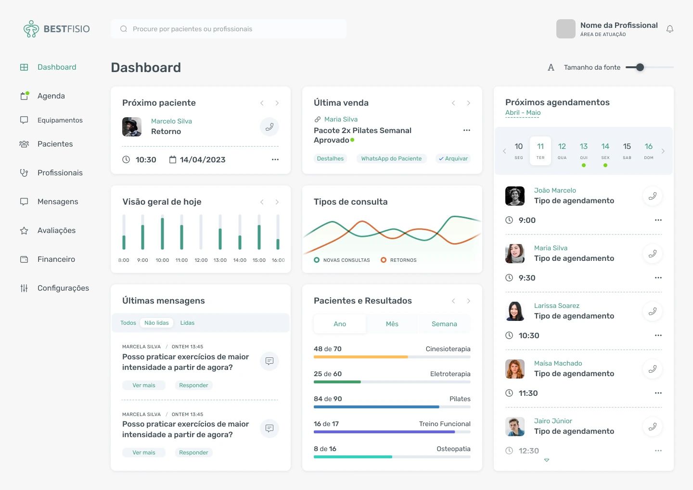
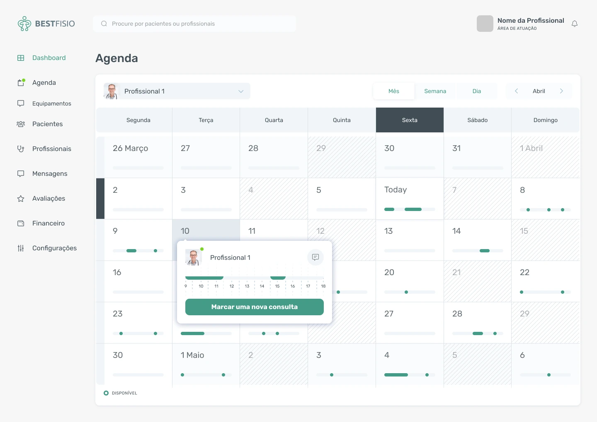
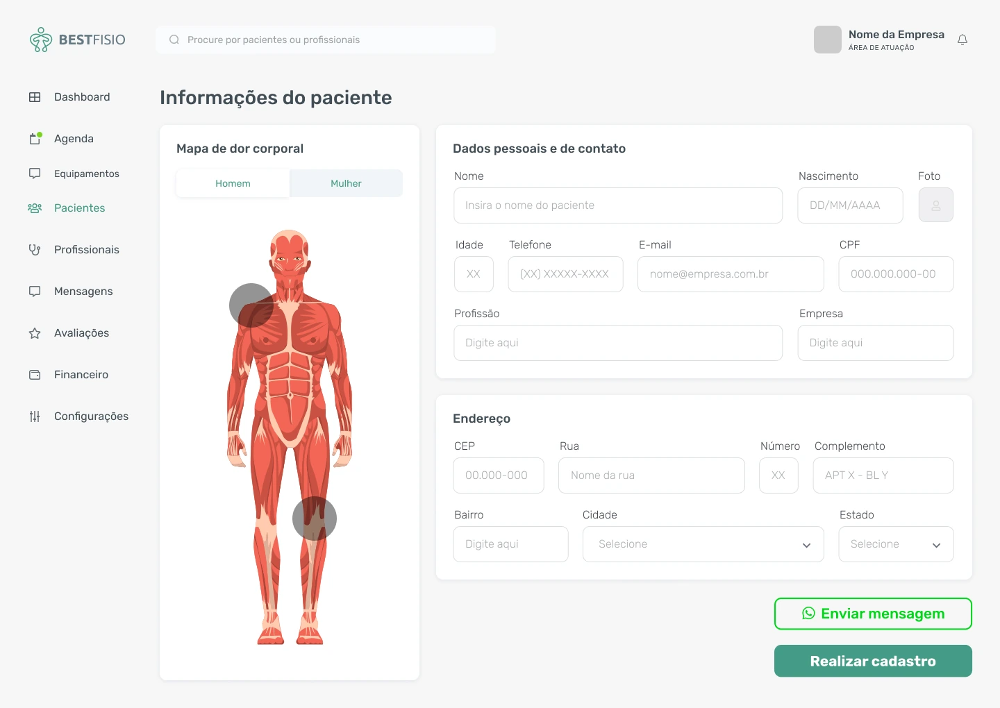
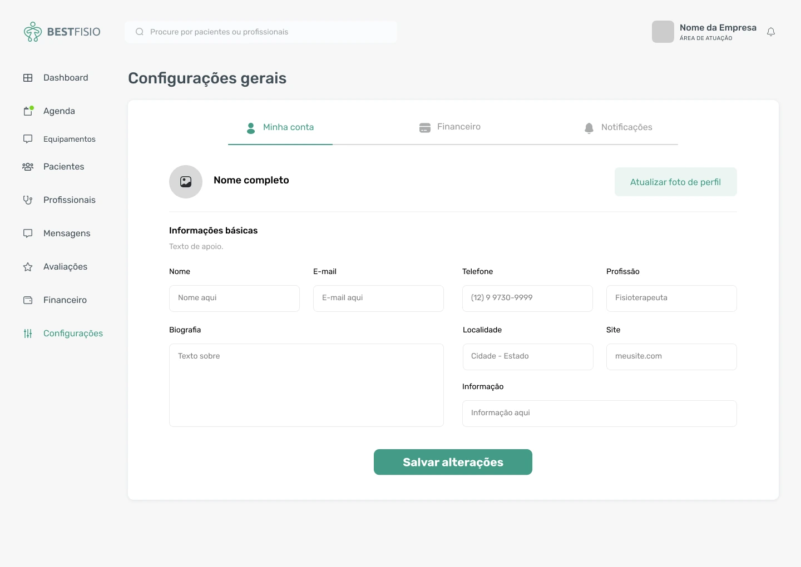

O dia em primeiro plano
Próximo paciente, agendamentos e mensagens dividem o painel com indicadores. A hierarquia aproxima as tarefas imediatas da visão geral.
Bestfisio
Uma plataforma de gestão que aproxima agenda, informações do paciente e visão da operação de fisioterapia.
Explore o projeto
EscopoPesquisa, fluxos, wireframes, UI e prototipação.
CriaçãoSolucci
ApresentaçãoDesign de produto e experiência. Interfaces originais do projeto.
A rotina de uma clínica alterna entre horários, pacientes, mensagens e acompanhamento da operação. Quando essas informações competem entre si, encontrar o que importa vira mais uma tarefa.
O desenho organiza a plataforma em áreas reconhecíveis. O painel reúne a visão do dia; a agenda concentra os compromissos; o cadastro coloca as informações do paciente ao lado do mapa corporal de dor.
Alterne entre as áreas do sistema. Use a ampliação para examinar os detalhes, inclusive no celular.
Os mesmos eixos de navegação acompanham a mudança de contexto, do planejamento da agenda à leitura de informações individuais.
Interfaces do projeto. Indicadores e informações ilustrativas das telas não representam resultados comerciais.
01 / 04Visão da operação
Não foi possível carregar a navegação. As telas estão disponíveis abaixo.



Próximo paciente, agendamentos e mensagens dividem o painel com indicadores. A hierarquia aproxima as tarefas imediatas da visão geral.
A agenda distribui os compromissos sobre uma grade temporal. O contexto do profissional e o acesso ao agendamento permanecem próximos.
O mapa corporal e os dados do paciente ocupam áreas distintas da mesma tela. A separação ajuda a localizar informações sem misturar seus papéis.
Leitura das etapas e dos caminhos representados nas interfaces.
Consultar a agenda e os horários.
Acessar o contexto do paciente.
Ler dados e mapa corporal.
Voltar à visão geral da operação.
Pesquisa, desenho de fluxos, wireframes e prototipação orientaram a interface de gestão. O case mostra a relação entre visão geral, agenda e informações do paciente, preservando o desenho original das telas.
Projeto apresentado pelo trabalho de design e prototipação.